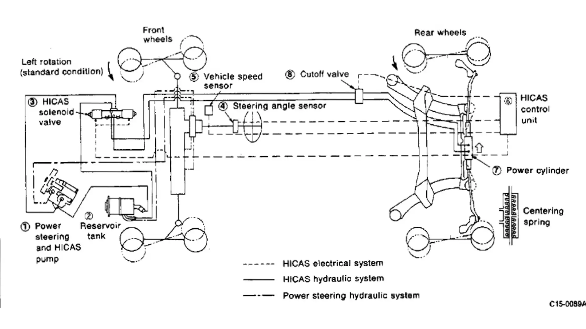

HICAS, or HIgh Capacity Actively controlled Steering) is Nissan's rear wheel steering system found on cars ranging from the more recent Skyline and Fairlady Z (300ZX) iterations to smaller models like the Nissan Cefiro (A31), 240SX/Silvia (S13 & S15)/180SX and Nissan Serena/Nissan Largo. It is also found on models from Nissan's Infiniti division, such as the Q45, M45/M35 and G35/G37. Unlike many other four wheel steering systems, HICAS and Super HICAS are fitted to improve handling rather than just as a parking aid. HICAS was introduced on the 1986 (HICAS was almost used on the 1985 model but was not ready in time for production) Skyline GTS coupes (GTS, GTS-R, and GTS-X). The system was later adapted to work on many models in the Nissan range, beginning with the Passage GT. Earlier models of HICAS (hydraulic versions of HICAS) did not depend only on the high speeds using the speedometer but were used to maneuver at lower speeds through obstacles. After disabling HICAS, it has been noted that slow maneuvers including parking and quick response steering seemed more difficult. Earlier HICAS versions used hydraulics to steer the rear wheels. The hydraulic system was powered by the power steering pump and used speed sensors to determine how much and in which direction to steer the rear wheels. Later versions, called Super HICAS, moved to an electric actuator for the rear steering rack, making the system much lighter. The Super HICAS system also used its own computer to control the system instead of speed sensors. HICAS and Super HICAS rear wheel steering.
Road Cars
Nissan HiCAS

